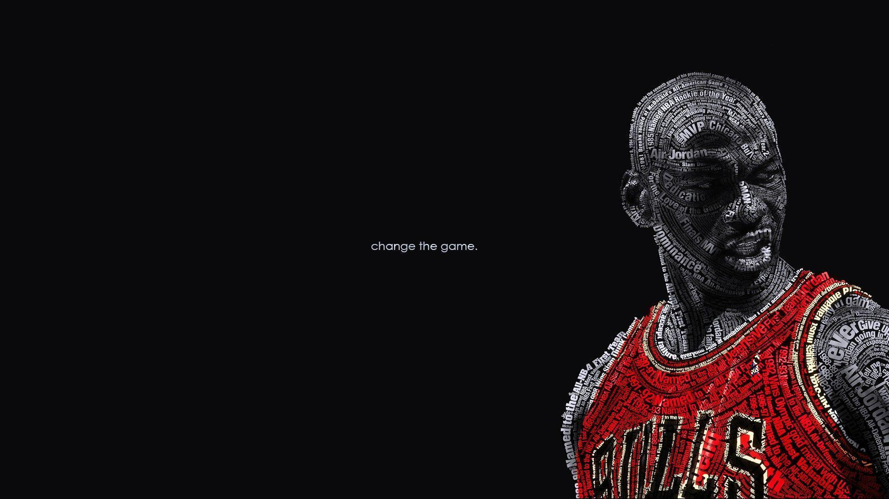

single picture

Picture with text
During his rookie season with the Bulls, Jordan averaged 28.2 ppg on 51.5% shooting,
and helped make a team that had won 35% of games in the previous three seasons playoff contenders.
He quickly became a fan favorite even in opposing arenas, Roy S.
Johnson of The New York Times described him as "the phenomenal rookie of the Bulls" in November,
and Jordan appeared on the cover of Sports Illustrated with the heading "A Star Is Born" in December.